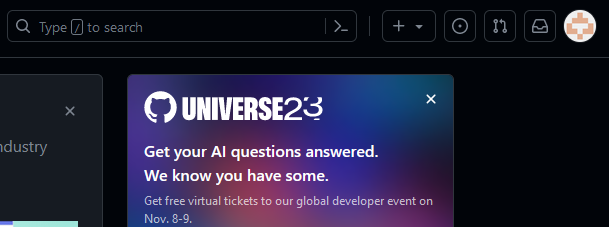
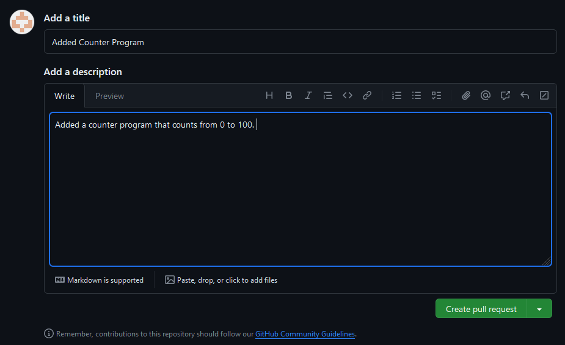
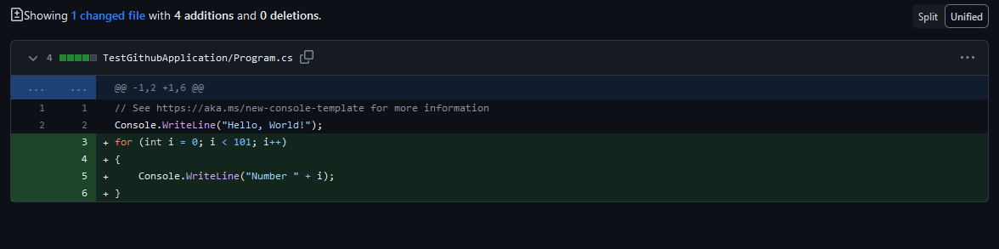

Using GitHub in the command line
Opening The Terminal
The following section includes the command line methods of how to use Git and GitHub for source control, this is a more advanced implementation of Git and is not essential for your assignment. But if you wish to know how it works, please read on below.
As mentioned previously, GIT commands and using GitHub can also be achieved by using a command line.
For the purpose of this tutorial, we are going to use PowerShell through the Windows Terminal as our CLI to use GIT, mainly because it’s the default on Windows 11 but most CLIs will work just as well. To access the Terminal from windows, press the Start/Windows button and perform a search for the Terminal using the search bar at the bottom of the screen. (If the search bar does not appear begin typing with the start menu open and the search will start automatically)
Then application for the command prompt should appear at the top of the window, click on this to open the PowerShell application.

If correctly done the Terminal window should open and you should see a screen that contains a flashing white cursor.
Checking GIT is installed
If you are using a university machine, Git should already be installed and ready to use on your system. If you are not, and you haven't installed it previously, then you will need to install it yourself before you can begin to use Git in the command line.
To check if you already have Git installed, in PowerShell write the command:
git version
If The Terminal returns information about your Git install, then you currently have access to use Git on your PC. If it returns the following error:
Then you need to ensure that Git is installed on your machine. If you already have a valid Git install you can progress to the “Creating a repository” page. Otherwise:
To download Git, visit the following link: https://git-scm.com/download/win
Select the option at the top of the page to download the latest version of git and wait for the download to finish.

When the download has completed run the installer and install the software using your desired preferences. When you reach the PATH environment window it is recommended that you keep it to the default value provided. Choosing to run git from the command line and third-party software.

You should also choose the option to use the bundled OpenSSH.

And select to use the OpenSSL library for your HTTPS connections.
Select that you wish to checkout Windows style in the next window.

In the next window select that you wish to use the default windows console window.

Keep the “Git pull” data to its default behaviour.

Keep the Git credential manager at its default value.

Keep enable file system caching turned on.

Leave both experimental features off.

Finally, click install to start the installation process.
Reopen the command prompt and type git, if you get a response like the one below GIT has been installed correctly
Creating A Repository
Before we can create our new repository, we much first tell the command line the folder that we are going to save it in. To do this we must use the command:
cd [path to repo folder]
After pressing enter you will notice that your command prompt has changed to represent that you are now in that folder.
Now we are in the correct folder we can create our repo; we do this by using the command:
git init
The command line will then inform your that a new Git repo has been created within the folder you previously navigated into.
This newly created repository is a local repository that exists on your current machine. In order for you to push this repository on to GitHub you also need to create a repository on GitHub that it can be pushed into.
Navigate to www.github.com and log in using your GitHub Credentials.
The first screen you see after you log in is the GitHub dashboard, from here we are going to create a new repository. On the left-hand side of the dashboard, you should be able to see a list of all of the repositories that you have created so far.
Press the green “New” button which is visible at the top of that list to create a new repository.
Alternatively, if your dashboard doesn’t have a repository list, or you are struggling to find it, from the dashboard select your icon on the right-hand side of the screen, this will be represented by a selection of coloured squares that are unique to you:

Click on the icon and then select “Your repositories” from the drop-down menu.

This will redirect you to the repositories screen, which has the same green “new” button at the top right-hand side of the screen:

Using either of these links will redirect you to the create a repository screen.
Fill in the create a new repository screen with the following information:
- Repository template: No template
- Owner: Select yourself from the dropdown box
- Repository name: Set to GitHubTutorialCLI
- Description: A basic repository for the University of Hull GitHub tutorial
- Set the repository to private (this means that only you will be able to access it)
- Select the add a README file checkbox
- Set Git Ignore to Visual Studio
- Leave license on “None”
When you have completed the above the create a repository page should look like it does below (minus the different owner):

When you have done this press the green “Create Repository” button to continue, you should be redirected to your completed repository that will look like the following image:
Pushing to GitHub
Now you have created a local repository, and an online GitHub repository that can hold your program the next step is to create a link between your local repository and the one on GitHub, this will allow you to push your local changes to GitHub when you have completed them.
When you have created the creation of your repository on GitHub you then need to navigate back to the console and enter the following command:
git remote add origin [link to your GitHub repository here]
This tells git the online repository that we are looking to use throughout the process.
Before we can begin pushing information from our local repository into the GitHub one, we first need to get the information that GitHub generated when it created the repo, including the repo and readme file.
To do this enter the following command:
git pull origin main
and press enter.
Note you may find that you receive the following error informing you that it will not let you merge unrelated history's, this can often happen if you already have files in your repo - to fix this rerun the command with --allow-unrelated-histories added, this will allow you to merge the information from GitHub into the repo you created.
A prompt so sign into GitHub may appear on the screen, log in with your GitHub details so that it can get access to the repo.
Click sign in with your browser and you will be redirected to a window asking if you wish to authorise this application – you may need to log in if you have not already.
Click the authorize button and will be redirected to enter your password again to confirm, when completed you should get a prompt to show your authorisation is completed.

The GitHub specific information (which in this case is just the Readme) will then be cloned into your previously created local repo.

Now you have linked your local repository to your GitHub one, and pulled down the programs generated you can now push a program up to GitHub – so lets create one!
Open visual studio and create a new project, the project can be anything you like (you can just stick with the default console template if you want) but make sure you set its location as the folder you created for your GitHub repository:
When completed your folder should contain both the files you downloaded from GitHub previously and your recently created program.
Note: It should be noted that you can do this in reverse if you wish, you can create a program and then turn its folder into a local repository that can then be connected to GitHub. You do not have to create the repository first.
Now you have created a program you need to tell your local git repository that you want to add the newly created files to it, you can do this by entering the command:
git status
This will return a list of files that git picks up within the repository that has been created. And should look like the image below.
As the response suggests git can find your new file within the repository but they are currently “untracked” – which is why it shows in red.
Git will only manage a file that it has been specifically told to track, so, like the response from the command prompt suggests we need to do this manually. To do this use the command:
git add .
Note: this command adds all untracked files and folders to the repository - if you only wish to add individual files to the commit you can do so by writing git add and then the name of the file – including its extension - e.g. git add testfile.txt
This will add everything in the folder to the stage, meaning that it is now managed by GIT.
View the status again and you will now see the files are being picked up by GIT within the repository.
You will notice not only that they are shown in green to show that they are being tracked, but also that each individual file in the folder is shown, not just the overall folder itself.
Now Git is picking up our now files we need to commit them so that they are saved to the repository.
We do this by using the command: git commit –m “A message about the commit here”.
This tells git that we are committing the files it currently has on the stage. The message you add here should be clear show exactly what changes you are making to the repository.
When you have written the command and the message press enter and the command line will update to inform you that the files you added have been committed to the repository.
Currently, the repository only exists locally, and if we want to push our changes to GitHub there are a few more steps that we need to complete.
At this stage, you should currently have a local repository that has files within it that you have committed.
Before we upload our repository to GitHub, we first need to make some changes within the PowerShell window to ensure that our local repository matches up with GitHub structure.
To achieve this, we need to enter the following command: git branch -m master main - this ensures the name of our "main" branch follows the naming conventions used by GitHub.
Entering this command may not give any response from within PowerShell - this is completely normal.
After changing our "main" branch behaviour we must then push our repository to GitHub. We can do this by using the: Git push –u origin main command.
Press enter, this is the command that tells GitHub that we want to push the repository we have created to the GitHub repository provided earlier.
The command line should update, informing you that the local data has been pushed to the GitHub repository.
This can also be checked by revisiting the online version of the GitHub repository and ensuring that the locally committed files are there.

If the files in your GitHub repository reflect the ones in your local one, then the process was completed successfully - you can now repeat this process every time you wish to make changes to your repo.
Branching and Merging Using The Command Line
Like in GitHub desktop, branches can also be created and managed using the command line.
To create a branch first tun the command:
Git checkout –b nameofthebranch
This will create a new branch and immediately move us into it. We can confirm the creation of our new branch by writing the git branch command, which will list all of the branches that currently exist.
The Asterix (*) and colour green shows the branch that you are currently working on.
Open your program and make some changes to it – for the purpose of this demo I am going to add a simple loop that will count to 100 – but you can do anything you like!
Now we have created a branch and made some changes to it we need to push it to GitHub so that it can be accessed from anywhere.
To do this we go through the same process or staging, committing and pushing we did previously. The only change being that we push to the branch we created using:
Press enter. As it did previously the command line will update to show that the branch has been pushed to GitHub, similar to below:
Once again, we can go to GitHub to ensure that the branch has been pushed successfully.
Now you have created a branch and pushed to it you now need to merge it back into your main program. From the branches window select “new pull request” and you will be redirected to the pull request wizard.
The first thing you will notice is that the branch we are currently working on can be automatically merged, as shown by the prompt at the top of the page.

The reason for this is that we are only adding to our repository, we haven’t changed or deleted anything that could stop our project from working based on something that someone else is working on, which would cause a conflict.
Underneath you will notice a Name and Description that will accompany your pull request. As when pushing it is vital that these fields are easy to understand and make it clear what is present within the branch, as someone else may be checking the code that is being merged and may need some clear information.

Do not create your pull request yet! First scroll down and you will be able to see all the changes that are being made to the repository. You will notice that these items look very similar to the GitHub desktop interface when are a pushing changes to our project, with items that are highlighted in green representing items that have been added to the repository.

When you have finished looking through your changes scroll back to the top of the screen and press the “create pull request” button. This will create a Pull Request that tells GitHub you wish to merge this project into your main branch.
You will then be relocated to the Pull Requests window which shows information about the request you have just made and gives you the ability to add it to your project.
As mentioned previously as this file makes no changes that clash with the existing project it can be merged automatically, and GitHub will remind us of this here.
If you are happy with the outcome of this Pull Request, then you can click the “Merge Pull Request” button.
The button will then change to a confirmation to ensure that you wish to make this decision, click the “Confirm merge” button to commit your branch to the main repository.
When this has been completed the UI will change to purple to show that a branch has been merged.
If this is the case then the branch has been merged, and you are now safe to press the “Delete branch” button to remove the branch from your project.
It is then good practice to write a comment underneath showing that you have merged and closed the branch.
When all is completed, your screen should look like this, showing a timeline of the branch being added, merged and then deleted.
When this has been completed navigate back to the main page of your repository, you should be able to see that the changes from your branch have been added.
When a branch has been merged into a project using GitHub we then need to update our local version of the repository to reflect this.
To do this we must first switch back to the main branch in the command line, we do this using the command:
git checkout main
Now we are back in the main branch we can update it using the pull command we used earlier
git pull
This will update the main branch we are currently working on and the command line will change to reflect this:
Congratulations – you can now branch and merge using the command line!